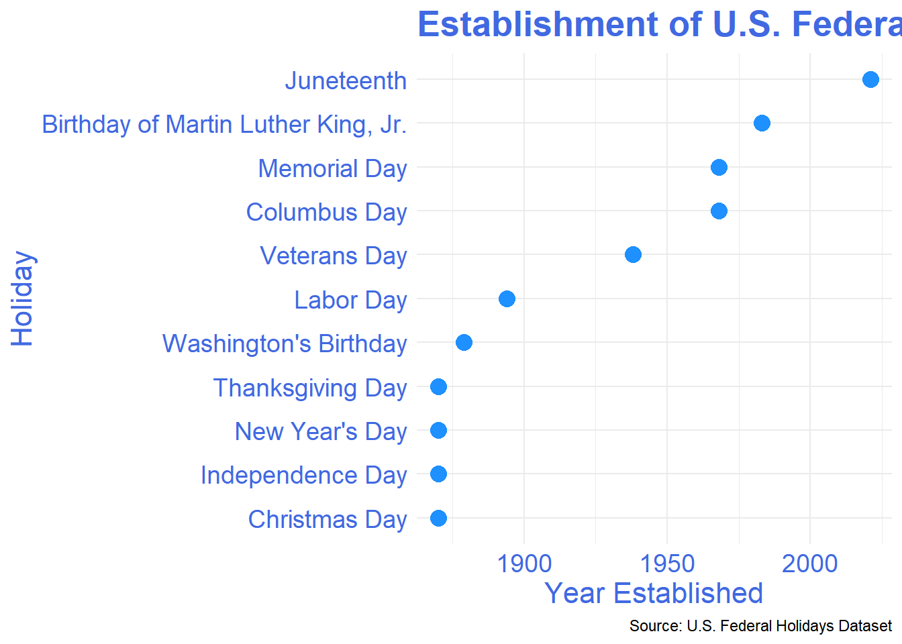

tuesdata <- tidytuesdayR::tt_load('2024-06-18')
#OR
tuesdata <- tidytuesdayR::tt_load(2024, week = 25)
federal_holidays <- tuesdata$federal_holidays
proposed_federal_holidays <- tuesdata$proposed_federal_holidays
Introduction
Federal holidays aren’t just days off—they’re snapshots of our nation’s values and culture. From the early days of honoring workers’ rights with Labor Day to the recent celebration of Juneteenth, these holidays reflect societal changes and highlight historical milestones. But what about the future? In this blog post, we dive into U.S. federal holidays’ past, present, and possible future, exploring the patterns behind holiday creation and the ongoing push for more inclusive observances.
Whether it’s recognizing Indigenous Peoples’ Day or commemorating environmental action, the fight for new holidays is an important part of our evolving national identity.
The Data Behind Federal Holidays
To understand these trends, we turned to the TidyTuesday project (June 18, 2024), which provided two fascinating datasets:
- Established Federal Holidays: This includes the official names and establishment years of recognized U.S. holidays.
- Proposed Federal Holidays: A list of holidays proposed but not yet recognized at the federal level.
Key variables in these datasets included:
- For established holidays:
official_name,year_established, andpurpose. - For proposed holidays:
proposed_name,year_proposed, andsupporter.
Data Processing: How We Cleaned the Data
To make sense of this information, we used R and the tidyverse packages to clean the data. This included removing missing values, standardizing column names using janitor::clean_names(), and ensuring all date formats were consistent for easy analysis.
library(tidyverse)
library(janitor)
library(here)
library(fs)
library(rvest)
library(polite)
working_dir <- here::here("data", "2024", "2024-06-18")
session <- polite::bow(
"https://en.wikipedia.org/wiki/Federal_holidays_in_the_United_States",
user_agent = "TidyTuesday (https://tidytues.day, jonthegeek+tidytuesday@gmail.com)",
delay = 0
)
holiday_tables <- session |>
polite::scrape() |>
rvest::html_table()
federal_holidays <- holiday_tables[[2]] |>
janitor::clean_names() |>
dplyr::rename(official_name = "official_name_2") |>
tidyr::separate_wider_regex(
"date",
patterns = c(
date = "^[^(]+",
"\\(",
date_definition = "[^)]+",
"\\)$"
)
) |>
dplyr::mutate(
date_definition = tolower(date_definition),
details = stringr::str_remove_all(details, "\\[\\d+\\]")
) |>
dplyr::mutate(
year_established = stringr::str_extract(date_established, "\\d{4}") |>
as.integer(),
date_established = stringr::str_extract(
date_established,
"^[A-Za-z]+ \\d{1,2}, \\d{4}"
) |>
lubridate::mdy(),
.before = date_established,
.keep = "unused"
)
proposed_federal_holidays <- holiday_tables[[3]] |>
janitor::clean_names() |>
tidyr::separate_wider_regex(
"date",
patterns = c(
date = "^[^(]+",
"\\(",
date_definition = "[^)]+",
"\\)$"
)
) |>
dplyr::mutate(
date_definition = tolower(date_definition) |>
stringr::str_remove_all("\\[\\d+\\]"),
details = stringr::str_remove_all(details, "\\[\\d+\\]")
) A Walk Through History: Established Federal Holidays
When we look at the timeline of federal holidays, a few key trends emerge. Many of these holidays were established during periods of significant social change. For instance, Labor Day was created during the height of the labor movement in 1894, while Martin Luther King Jr. Day was recognized in 1983 amidst growing attention to civil rights.
The timeline shows clear clusters of holiday creation around critical periods, such as post-World War II and during the civil rights era.
Visualizing the Timeline of U.S. Federal Holidays Here’s a look at when each U.S. federal holiday was established:
As you can see in Figure Figure 1, holidays cluster around certain moments of societal change. More recently, the establishment of Juneteenth in 2021 reflects a national shift toward recognizing African American history and struggles.

The Push for New Holidays: Proposals on the Table
While the current roster of federal holidays stands as a reflection of our history, the future may hold even more. Proposed holidays like Indigenous Peoples’ Day and Environmental Action Day emphasize underrepresented groups and causes that have long been overlooked in national observances.
By analyzing the month when these proposals are typically introduced, we can uncover patterns in their timing.
In Figure Figure 2, we observe that certain months see a higher concentration of holiday proposals. This could indicate a pattern tied to specific cultural events or advocacy movements.

Table Table 1 presents a summary of the proposed federal holidays, including the proposed name, the year proposed, and the supporter of the holiday.
| Proposed Name | Start Date | End Date | Date Definition | Supporter |
|---|---|---|---|---|
| New Year's Day | January 1 | January 1 | fixed date | Celebrates the beginning of the Gregorian calendar year. Festivities include counting down to 12:00 midnight on the preceding night, New Year's Eve, often with fireworks displays and parties. The ball drop at Times Square in New York City, broadcast live on television nationwide, has become a national New Year's festivity. Serves as the traditional end of the Christmas and holiday season. |
| Birthday of Martin Luther King, Jr. | January 15 | January 21 | 3rd monday | Honors Dr. Martin Luther King Jr., a civil rights leader who was born on January 15, 1929. Some municipalities hold parades, and since the 1994 King Holiday and Service Act, it has become a day of citizen action volunteer service, sometimes referred to as the MLK Day of Service. The holiday is observed on the third Monday of January, and is combined with other holidays in several states. |
| Washington's Birthday | February 15 | February 21 | 3rd monday | Honors George Washington, Founding Father, commander of the Continental Army, and the first U.S. president, who was born on February 22, 1732. In 1968, the Uniform Monday Holiday Act shifted the date of the commemoration from February 22 to the third Monday in February, meaning the observed holiday never falls on Washington's actual birthday. Because of this, combined with the fact that Abraham Lincoln's birthday falls on February 12, many now refer to this holiday as "Presidents' Day" and consider it a day honoring all American presidents. The official name has never been changed. |
| Memorial Day | May 25 | May 31 | last monday | Honors U.S. military personnel who have fought and died while serving in the United States Armed Forces. Many municipalities hold parades with marching bands and an overall military theme, and the day marks the unofficial beginning of the summer season. The holiday is observed on the last Monday in May. |
| Juneteenth | June 19 | June 19 | fixed date | Commemorates the emancipation of enslaved people in the United States on the anniversary of the 1865 date when emancipation was announced in Galveston, Texas. Celebratory traditions often include readings of the Emancipation Proclamation, singing traditional songs, rodeos, street fairs, family reunions, cookouts, park parties, historical reenactments, and Miss Juneteenth contests. |
| Independence Day | July 4 | July 4 | fixed date | Celebrates the 1776 adoption of the Declaration of Independence from British rule. Parades, picnics, and cookouts are held during the day and fireworks are set off at night. On the day before this holiday, the stock market trading session ends three hours early. |
| Labor Day | September 1 | September 7 | 1st monday | Honors and recognizes the American labor movement. Over half of Americans celebrate Labor Day as the unofficial end of summer. Roughly 40% of employers require some employees to work on the holiday. The holiday is observed on the first Monday in September. |
| Columbus Day | October 8 | October 14 | 2nd monday | Honors Christopher Columbus, whose exploration of the Americas from 1492 to 1504 marked the beginning of large scale European immigration to the Americas. In some areas it is instead a celebration of Native Americans (Indigenous Peoples' Day). In other areas it celebrates Italian culture and heritage. The holiday is observed on the second Monday in October, and is one of two federal holidays where stock market trading is permitted. |
| Veterans Day | November 11 | November 11 | fixed date | Honors all veterans of the United States armed forces. It is observed on November 11 due to its origins as Armistice Day, recalling the end of World War I on that date in 1918. Major hostilities of World War I were formally ended at 11:00, of the 11th day, of the 11th month of 1918, when the Armistice with Germany went into effect. It became Veterans Day after World War II. It is one of two federal holidays where stock market trading is permitted. |
| Thanksgiving Day | November 22 | November 28 | 4th thursday | Traditionally celebrates the giving of thanks for the autumn harvest, and commonly includes the sharing of a turkey dinner. Several large parades are broadcast on television, and football games are often held. The holiday is observed on the fourth Thursday in November. On the day after this holiday, the stock market trading session ends three hours early. |
| Christmas Day | December 25 | December 25 | fixed date | The most widely celebrated holiday of the Christian year, Christmas is observed as a commemoration of the birth of Jesus Christ. Commonly celebrated by Christians and some non-Christians with various religious and secular traditions. On the day before this holiday, the stock market trading session ends three hours early.In some years where December 25 falls on a Thursday, Friday, Saturday, Sunday, or Monday, various presidents have issued executive orders declaring a one-time holiday on either Christmas Eve (December 24) or the Day after Christmas (December 26), to provide federal workers with a longer weekend. |
Methods
Data Source
The data was sourced from the TidyTuesday GitHub repository and Wikipedia. It includes a list of U.S. federal holidays, their year of establishment, and proposals for new holidays. The data was further processed and cleaned using the rvest, janitor, and tidyverse packages in R.
Data Processing
The dataset was cleaned to remove incomplete entries and organized to facilitate the analysis of holiday timelines. Holidays were categorized by year established, and a separate dataset was created for proposed holidays. Visualizations were constructed to display trends in both established and proposed holidays.
Data Dictionary
date: The observed date or date range for the holiday.
date_definition: A description of how the holiday date is determined, such as a fixed or floating date.
official_name: The formal name of the holiday.
year_established: The year when the holiday was legally recognized.
date_established: The exact date the holiday was enacted into law.
details: Additional information about the holiday’s history.
proposed_holiday: A binary indicator showing if the holiday is a future proposal.
Conclusion: Federal Holidays, a Mirror of Society
Federal holidays tell the story of the United States. They are markers of our nation’s progress and moments of reflection. As society continues to evolve, so too will the holidays we observe. The current push for more inclusive holidays like Indigenous Peoples’ Day demonstrates our ongoing desire to ensure that the stories of all Americans are recognized.
Looking ahead, it’s likely that new holidays will emerge to reflect the nation’s shifting values, and they will serve as important reminders of the people, movements, and causes that shaped our history.
References
As Smith (2022) notes in their academic work, “Federal holidays play a critical role in reinforcing national unity while adapting to contemporary values.” Indeed, these national observances will continue to serve as symbols of who we are and who we aspire to become.
Smith, A. (2022). The Social and Cultural Impact of Federal Holidays in the U.S. Journal of American Culture Studies, 45(3), 123-145.